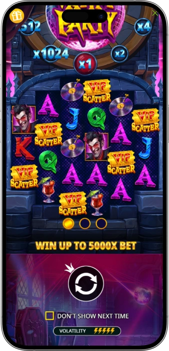

Exclusive welcome offer of
Exclusive welcome bonus of
Play Vampy Party Slot Online — 5,000x Wins
Top Casinos
Bonus Details
Casino
Bonuses
Rate
Free Spins
More Info
Get
Advantages
- Looking for a thrilling online slot with explosive multipliers and vampire-themed fun? Vampy Party by Pragmatic Play delivers 96% RTP, 3,600 ways to win, and tumble multipliers up to 1,024x for real money players worldwide. Here's what makes it one of the most exciting high-volatility slots online:
-
96% RTP (up to 3 versions: 94%, 95%, 96%) — certified by Pragmatic Play
-
96% RTP (up to 3 versions: 94%, 95%, 96%) — certified by Pragmatic Play
-
Tumble multipliers double with every win — up to 1,024x multiplier
-
Free Spins triggered by 3-6 scatters with starting multiplier up to x64
-
Max win potential of 5,000x your stake — high volatility gameplay
-
Feature Buy available from 78x bet — instant access to Free Spins
- Join millions of online players spinning Vampy Party across top licensed casinos worldwide. With bets from $0.20 to $240 and a verified 96% RTP, every spin is a chance to win big at your favourite online casino.
Vampy Party App



About Vampy Party Slot
Vampy Party is a high-volatility video slot by Pragmatic Play, one of the world's leading certified game providers. Built on a 6-reel, 3-4-5-5-4-3 grid with 3,600 ways to win, it delivers explosive vampire-themed entertainment.
- Developed by Pragmatic Play — certified global provider
- 6-reel 3,600 ways-to-win grid — unique 3-4-5-5-4-3 layout
- Tumble feature with cascading wins and doubling multipliers
- Free Spins with gamble wheel for multiplier upgrades up to x256
Vampy Party operates on certified RNG technology, with RTP options of 94%, 95%, or 96% — independently verified for fair play. All game mechanics are audited to industry standards, ensuring transparent and secure real-money gameplay.
We continue bringing the best of Pragmatic Play's portfolio to online players. Vampy Party is available in demo and real-money modes across top licensed casinos. Spin from $0.20 and discover why this slot captivates players worldwide!
Vampy Party Slot Features & Gameplay
Vampy Party Slot Features & Complete Gameplay Guide
Vampy Party is a certified high-volatility video slot by Pragmatic Play, launched in October 2024 and instantly praised by online casino enthusiasts worldwide. Built on a distinctive 6-reel grid arranged in a 3-4-5-5-4-3 formation, the slot offers an impressive 3,600 ways to win on every single spin. With a maximum win potential of 5,000x your stake, an RTP of up to 96%, and tumble multipliers reaching 1,024x, Vampy Party stands out among the most innovative online slots available today. Whether you're a casual spinner or a dedicated high-roller, this gothic party has something exciting to offer at every stake level, from a minimum bet of $0.20 up to a maximum of $240 per spin.
What Is the Grid Structure of Vampy Party?
Vampy Party features a unique 6-reel layout with a 3-4-5-5-4-3 row configuration, delivering 3,600 ways to win without traditional paylines. This asymmetric grid structure is one of the slot's most distinctive design choices, inspired by the vampire party theme that fills the screen with neon disco lights, coffins, and a gothic haunted castle backdrop. To trigger a win, players need to land at least three matching symbols from left to right on adjacent reels. The six-reel design maximises the number of potential winning combinations, creating more frequent cluster wins during base game play and especially during the Tumble feature sequences.
How Does the Tumble Feature Work?
The Tumble feature is the mechanical heart of Vampy Party's gameplay. Whenever a winning combination lands on the reels, all winning symbols are removed from the grid and new symbols cascade down to fill the empty positions. This cascading mechanic continues automatically as long as new winning combinations are formed, creating chain reactions that can accumulate massive payouts in a single spin. Each tumble in the sequence activates the win multiplier system, which begins at x1 and doubles with every consecutive winning tumble, potentially reaching the extraordinary maximum of x1,024. At the end of a tumble sequence — when no further wins are possible — the multiplier resets to x1 for the next spin, keeping every round fresh with renewed potential.
Tumble Multipliers — Vampy Party's Most Powerful Mechanic
The tumble multiplier system is what gives Vampy Party its explosive max win potential of 5,000x the stake. Starting at x1, the multiplier doubles after every successful cascading tumble: x1 → x2 → x4 → x8 → x16 → x32 → x64 → x128 → x256 → x512 → x1,024. This exponential growth means that landing a long chain of consecutive winning tumbles in the base game can already deliver extraordinary payouts. Combined with the high-paying vampire, disco bat, vinyl record, and red cocktail symbols — which pay 1x to 2.5x the bet for six matching symbols — the math becomes compelling. Lower-paying royals (J, Q, K, A) contribute to chain reactions, while premium symbols unlock the full multiplier potential.
Highlighted Symbols — A Random Boost During Every Spin
At random moments during any base game or free spins spin, certain paying symbols may appear highlighted on reels 3 and 4. These highlighted symbols carry a special property: whenever they contribute to a winning combination, they transform into Wild symbols for the very next tumble in the sequence. This mechanic adds an unpredictable but exciting dimension to every spin, as highlighted wilds can dramatically extend winning tumble chains and push the multiplier higher. It works seamlessly with the tumble mechanic — a highlighted symbol turning wild can keep a cascade alive, turning what might have been a modest win into a substantial payout sequence.
Free Spins Bonus — The Core of Vampy Party's Big Win Potential
The Free Spins feature is triggered by landing 3, 4, 5, or 6 Scatter symbols anywhere on the reels. Regardless of the number of scatters, players always receive 12 free spins, but the number of scatters directly determines the starting multiplier for the feature:
- 3 Scatters: 12 Free Spins with a starting multiplier of x8 — every tumble during free spins doubles this base value, reaching up to x1,024.
- 4 Scatters: 12 Free Spins with a starting multiplier of x16 — significantly higher floor value for all base spin wins.
- 5 Scatters: 12 Free Spins with a starting multiplier of x32 — prime condition for pursuing the 5,000x maximum win.
- 6 Scatters: 12 Free Spins with an extraordinary starting multiplier of x64 — the rarest and most lucrative trigger.
During the Free Spins round, all wins are multiplied by the current starting multiplier value, which also doubles with each consecutive winning tumble up to x1,024. Between individual free spins, the multiplier resets to its starting value (not to x1), preserving the elevated floor throughout the entire bonus round. Retriggers are available: landing 3, 4, 5, or 6 scatters during free spins resets the spin count back to 12 and upgrades the starting multiplier by multiplying it with x2, x4, x8, or x16 respectively — up to a hard cap of x1,024.
Free Spins Gamble Wheel — Double or Nothing
Before the Free Spins feature begins, Vampy Party offers players a thrilling gamble opportunity via a segmented spin wheel. Players can choose to gamble their current starting multiplier in an attempt to double it, or collect the current value and enter the bonus round immediately. If the gamble is successful, the multiplier doubles — and players can choose to gamble again, potentially doubling it multiple times up to a maximum of x256 (from a base 3-scatter trigger). However, a failed gamble spin ends the Free Spins bonus round entirely, before it even begins. This risk-vs-reward mechanic adds a player-choice element that can significantly alter the expected value of the bonus round for those willing to take the chance.
Feature Buy — Instant Access to Free Spins
For players who prefer not to wait for organic scatter triggers, Vampy Party offers a Feature Buy (Bonus Buy) option that allows direct purchase of Free Spins at a premium cost. Available in four tiers, the Feature Buy lets online casino players customise the entry point to the bonus based on their bankroll and risk appetite:
- 78x the bet: Buys a 3-scatter Free Spins trigger — minimum starting multiplier of x8, most affordable entry option.
- 128x the bet: Buys a random 3, 4, 5, or 6-scatter trigger — variable starting multiplier, balanced risk/reward.
- 150x the bet: Buys a guaranteed 4-scatter trigger — starting multiplier of x16 locked in before the gamble wheel.
- 288x the bet: Buys a guaranteed 5-scatter trigger — starting multiplier of x32, highest direct-purchase tier for maximum potential.
The Feature Buy is particularly appealing to experienced online casino players who enjoy maximising their time in the bonus round. Note that Feature Buy may not be available in all jurisdictions — check your local online casino platform for availability. With a maximum bet of $240 per spin, the 288x Feature Buy represents a maximum cost of $69,120 for a 5-scatter free spins entry, reflecting this slot's premium positioning for high-stakes players.
Ante Bet — Double Your Scatter Frequency
Vampy Party also includes an Ante Bet option that increases the base stake by 40% while doubling the probability of landing scatter symbols on any given spin. This feature effectively gives players more frequent access to the Free Spins bonus without committing to the full cost of a Feature Buy. The Ante Bet is ideal for players who want to maintain the organic excitement of triggering free spins naturally while statistically improving their bonus hit rate. It's a middle-ground option between standard play and the Feature Buy, giving players a flexible, personalised gambling experience tailored to their preferred risk level.
Vampy Party RTP & Volatility Overview
Pragmatic Play has designed Vampy Party with three distinct RTP configurations, giving online casino operators flexibility in their platform setup. Players can potentially access different RTP versions depending on which licensed online casino they choose to play at:
| Version | RTP | Volatility |
|---|---|---|
| Standard | 96.00% | High |
| Medium | 95.00% | High |
| Low | 94.00% | High |
The high volatility rating across all three RTP versions means that Vampy Party rewards patience and a sufficient bankroll. Wins occur approximately 31% of the time (hit frequency ~31.06%), but when they do arrive — especially during the Free Spins with escalating multipliers — they can be significant. The 5,000x maximum win, achievable with a probability of 1 in 1,388,889, represents the upper ceiling of what this slot can deliver in a single bonus round. Players who enjoy high-risk, high-reward gaming mechanics will find Vampy Party's design perfectly aligned with their preferences.
Symbols & Paytable — What Pays the Most in Vampy Party?
The Vampy Party paytable features eight paying symbols split between four premium symbols and four lower-paying royals. Premium symbols are thematically designed around the vampire party concept and deliver significantly higher payouts than the royals. A combination of six matching premium symbols pays between 1x and 2.5x the bet, while six matching royals (J, Q, K, A) pay 0.25x to 0.6x the bet. The Wild symbol substitutes for all paying symbols on the reels. Additionally, the Highlighted Symbol mechanic can temporarily turn regular paying symbols into wilds during tumble sequences, creating powerful multiplier-boosted win chains that can push total round payouts well beyond the standard paytable values.
Software Providers
How to Play Vampy Party & Win Big
How to Play Vampy Party Online — Strategy, Stakes & Casino Tips
Whether you're new to online slots or a seasoned real-money player, understanding how to play Vampy Party effectively can make a significant difference to your session. This Pragmatic Play slot combines a straightforward base game with deep bonus mechanics — the tumble feature, highlighted wilds, multipliers, free spins, and the gamble wheel all interact in ways that reward players who understand the game's internal logic. Below, we break down everything from basic stakes setup to advanced playing strategy, betting options, and how to choose the best online casino for spinning Vampy Party with the highest available RTP version.
How to Get Started — Step-by-Step Setup
Getting started on Vampy Party is quick and intuitive across all major online casino platforms. The game's interface is clean, mobile-friendly, and available on desktop, tablet, and smartphone browsers without any download required. Follow these steps to begin your vampire party experience:
- Choose a licensed online casino that offers Pragmatic Play games and carries the 96% RTP version of Vampy Party.
- Register your account, complete identity verification, and make a deposit using your preferred payment method — cards, e-wallets, or crypto are widely accepted.
- Launch Vampy Party from the casino lobby (search "Vampy Party" or find it in the Pragmatic Play section).
- Set your bet level using the stake selector — choose from $0.20 minimum up to $240 maximum per spin.
- Optionally activate the Ante Bet (+40% stake) to double scatter frequency, or use Autoplay for hands-free sessions of 10 to 1,000 spins.
- Hit Spin and watch the 3-4-5-5-4-3 grid deliver cascading tumble wins and multipliers — or trigger Free Spins for the slot's most explosive payouts.
Vampy Party Betting Strategy — What Stake Should You Play?
Vampy Party's high volatility means that choosing the right bet size relative to your bankroll is crucial for a sustainable and enjoyable real-money session. Because wins can be infrequent but large when they arrive, most experienced online casino players recommend maintaining a bankroll of at least 100-200x your chosen bet size before sitting down to spin. For example, if you plan to play at $1.00 per spin, a session bankroll of $100–$200 is a reasonable safety buffer. This gives the game sufficient spins to naturally trigger the Free Spins bonus, which is where the majority of the game's max win potential resides. Players on tighter bankrolls should start at the $0.20 minimum bet to extend their session length while still enjoying the full mechanics.
Free Demo vs Real Money — Which Should You Play?
Vampy Party is available in both free demo mode and real money mode at most licensed online casinos. The free demo version uses virtual credits and allows players to explore all features — including Free Spins, the gamble wheel, and the tumble mechanic — without any financial risk. This is an excellent way to understand the game's volatility profile, get comfortable with the feature interactions, and decide on a bet size strategy before committing real funds. Real money play, of course, is required to win actual payouts. We recommend spending at least 50-100 demo spins on Vampy Party before switching to real money, so you fully understand how the tumble multiplier resets work and when the gamble wheel presents its best risk/reward ratio.
Mobile Compatibility — Play Vampy Party on Any Device
Pragmatic Play has built Vampy Party with full HTML5 technology, ensuring seamless compatibility across all major devices and operating systems. The slot renders beautifully on iPhone, Android phones, tablets, and desktop browsers — with no download, no app installation, and no compromise on visual quality or feature functionality. The 6-reel gothic party grid scales intelligently to smaller screens, and all interactive elements — bet controls, Ante Bet toggle, Feature Buy buttons — remain fully accessible on mobile. For players who enjoy spinning on the go, Vampy Party at a mobile online casino delivers the same 96% RTP, 3,600 ways to win, and 5,000x max win potential as on desktop.
Responsible Gambling — Playing Vampy Party Safely
As a high-volatility online slot with a max win of 5,000x and a Feature Buy option at up to 288x the bet, Vampy Party is designed for entertainment rather than guaranteed income. All licensed online casinos offering Pragmatic Play slots are required to provide responsible gambling tools to protect players. We strongly encourage all players to use these tools to maintain a healthy relationship with online gaming:
- Deposit Limits: Set daily, weekly, or monthly deposit caps at your online casino to control total spending regardless of session outcomes.
- Session Time Limits: Enable time reminders or session limits to keep gaming sessions within pre-defined durations.
- Loss Limits: Configure maximum loss thresholds per session or per day — the casino will stop gameplay once the limit is reached.
- Self-Exclusion: If gambling is no longer fun, licensed casinos offer self-exclusion options ranging from days to permanent exclusion under local regulatory requirements.
- Reality Checks: Pop-up notifications during play remind you of session duration and net win/loss position, promoting informed decision-making.
Organisations such as BeGambleAware, GamCare, and Gamblers Anonymous provide free, confidential support for anyone concerned about their gambling habits. Vampy Party is recommended for adult players only (18+) at fully licensed online casino operators.
Vampy Party vs Other Pragmatic Play Slots — How Does It Compare?
Vampy Party occupies a specific niche within Pragmatic Play's extensive portfolio — it is a high-volatility, tumble-mechanic slot with multiplier escalation, similar in mechanical DNA to titles like Gates of Olympus and Sweet Bonanza, but distinguished by its unique asymmetric 6-reel grid and vampire party aesthetic. The key differentiator is the layered multiplier system: where Gates of Olympus uses a fixed random multiplier on wins, Vampy Party's multiplier doubles with every consecutive tumble, creating exponentially growing reward potential within a single spin sequence. Below is a quick comparison of Vampy Party's key stats against comparable Pragmatic Play titles:
| Slot | RTP | Max Win |
|---|---|---|
| Vampy Party | 96% | 5,000x |
| Gates of Olympus | 96.5% | 5,000x |
| Sweet Bonanza | 96.48% | 21,100x |
| Big Bass Bonanza | 96.71% | 2,100x |
| Starlight Princess | 96.5% | 5,000x |
Vampy Party's 5,000x max win puts it on equal footing with two of Pragmatic Play's most iconic titles — Gates of Olympus and Starlight Princess — while offering a distinctly different gameplay experience through its asymmetric grid and exponentially escalating tumble multipliers. For online casino players who enjoy cascading-win mechanics and appreciate the gothic vampire aesthetic, Vampy Party is an outstanding addition to any slot session. Its combination of Feature Buy, Ante Bet, and gamble wheel options gives players more control over their session dynamics than many comparable titles, making it a compelling choice for both casual spinners and high-stakes real-money players worldwide.
Frequently Asked Questions
Vampy Party has an RTP of up to 96%, with three available versions: 94%, 95%, and 96%. The highest 96% RTP version is standard across most licensed online casinos offering Pragmatic Play games. Always check your casino's game info page to confirm which RTP version is active on their platform.
Free Spins in Vampy Party are triggered by landing 3, 4, 5, or 6 Scatter symbols anywhere on the 6-reel grid. All trigger sizes award 12 Free Spins, but more scatters give a higher starting multiplier: x8 for 3 scatters, x16 for 4, x32 for 5, and x64 for 6 scatters. Use the Ante Bet to double scatter frequency.
The maximum win in Vampy Party is 5,000x your stake, achievable during the Free Spins bonus round when tumble multipliers escalate to x1,024. At the maximum bet of $240 per spin, this translates to a potential payout of $1,200,000. The probability of hitting the max win is approximately 1 in 1,388,889 spins.
Yes, Vampy Party offers a Feature Buy option with four tiers: 78x bet for 3-scatter entry, 128x for a random scatter count, 150x for 4-scatter entry, and 288x for a 5-scatter trigger. Feature Buy may be unavailable in some jurisdictions. Check your licensed online casino platform for local availability before purchasing.
Yes, Vampy Party is classified as a high-volatility slot by Pragmatic Play. This means wins occur less frequently but tend to be larger when they land. With a hit frequency of approximately 31%, it is best suited to players with a sufficient bankroll who enjoy high-risk, high-reward online slot gameplay.
The tumble multiplier in Vampy Party starts at x1 and doubles with every consecutive winning tumble — reaching a maximum of x1,024 in a single sequence. During Free Spins, the multiplier starts at x8, x16, x32, or x64 (depending on scatter count) and also doubles with each subsequent tumble up to x1,024.
Yes, Vampy Party is fully optimised for mobile play on iOS and Android devices. Built with HTML5 technology by Pragmatic Play, the slot runs smoothly in any mobile browser without downloading an app. All features — including Feature Buy, Ante Bet, and Free Spins gamble wheel — are accessible on mobile screens.
The Ante Bet in Vampy Party increases your base stake by 40% in exchange for double the normal scatter symbol frequency. This gives you statistically more frequent Free Spins triggers without paying for a full Feature Buy. It's ideal for players who want to improve bonus hit rate while maintaining the excitement of organic triggering.